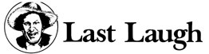

Well sir, I'm right happy to turn over my page this go-round to one of our country's great storytellers - the feller featured in the Plowboy Interview beginnin' on page 16-Garrison Keillor. The followin'selection (from Garrison's book Happy to Be Here ) is part of his essay "Shy Rights: Why Not Pretty Soon?"
Recently I read about a group of fat people who had organized to fight discrimination against themselves. They said that society oppresses the overweight by being thinner than them and that the term "overweight" itself is oppressive because it implies a "right" weight that the fatso has failed to make. Only weightists use such terms, they said; they demanded to be called "total" people and to be thought of in terms of wholeness; and they referred to thin people as being "not all there."
Don't get me wrong. This is fine with me. If, to quote the article if I may, "Fat Leaders Demand Expanded Rights Act, Claim Broad Base of Support," I have no objections to it whatsoever. I feel that it is their right to speak up and I admire them for doing so, though of course this is only my own opinion. I could be wrong.
Nevertheless, after reading the article, I wrote a letter to President Jimmy Carter demanding that his administration take action to end discrimination against shy persons sometime in the very near future. I pointed out three target areas - laws, schools, and attitudes - where shy rights maybe could be safeguarded. I tried not to be pushy but I laid it on the line. "Mr. President," I concluded, "you'll probably kill me for saying this, but compared to what you've done for other groups, we shys have settled for 'peanuts.' As you may know, we are not ones to make threats, but it is clear to me that if we don't get some action on this, it could be a darned quiet summer. It is up to you, Mr. President. Whatever you decide will be OK by me. Yours very cordially."
I never got around to mailing the letter, but evidently word got around in the shy community that I had written it, and I've noticed that most shy persons are not speaking to me these days. I guess they think the letter went too far. Probably they feel that making demands is a betrayal of the shy movement (or "gesture," as many shys call it) and an insult to shy pride and that it risks the loss of some of the gains we have already made, such as social security and library cards.
Perhaps they are right. I don't claim to have all the answers. I just feel that we ought to begin, at least, to think about some demands that we might make if, for example, we had to someday. That's all. I'm not saying we should make fools of ourselves, for heaven's sake!
Sometimes I feel that maybe we shy persons have borne our terrible burden for far too long now. Labeled by society as "wimps," "dorks," "creeps," and "sissies," stereotyped as Milquetoasts and Walter Mittys, and tagged as potential psychopaths ("He kept pretty much to himself," every psychopath's landlady is quoted as saying after the arrest, and for weeks thereafter every shy person is treated like a leper), we shys are desperately misunderstood on every hand. Because we don't "talk out" our feelings, it is assumed that we haven't any. It is assumed that we never exclaim, retort, or cry out, though naturallv we do on occasions when it seems called for.
Would anyone dare to say to a woman or a Third World person, "Oh, don't be a woman! Oh, don't be so Third!"? And yet people make bold with us whenever they please and put an arm around us and tell us not to be shy.
Hundreds of thousands of our shy brothers and sisters (and "cousins twice-removed," as militant shys refer to each other) are victimized every year by self-help programs that promise to "cure" shyness through hand-buzzer treatments, shout training, spicy diets, silence-aversion therapy, and every other gimmick in the book. Many of them claim to have "overcome" their shyness, but the sad fact is that they are afraid to say otherwise.
To us in the shy movement, however, shyness is not a disability or disease to be "overcome." It is simply the way we are. And in our own quiet way, we are secretly proud of it. It isn't something we shout about at public rallies and marches. It is Shy Pride. And while we don't have a Shy Pride Week, we do have many private moments when we keep our thoughts to ourselves, such as "Shy is nice," "Walk short," "Be proud - shut up," and "Shy is beautiful, for the most part." These are some that I thought up myself. Perhaps other shy persons have some of their own, I don't know.
Discrimination against the shy is our country's number one disgrace in my own personal opinion. Millions of men and women are denied equal employment, educational and recreational opportunities, and rewarding personal relationships simply because of their shyness. These injustices are nearly impossible to identify, not only because the shy person will not speak up when discriminated against, but also because the shy person almost always anticipates being denied these rights and doesn't ask for them in the first place. (In fact, most shys will politely decline a right when it is offered to them.)
Most shy lawyers agree that shys can never obtain justice under our current adversary system of law. The Sixth Amendment, for example, which gives the accused the right to confront his accusers, is anti-shy on the face of it. It effectively denies shy persons the right to accuse anyone of anything.
One solution might be to shift the burden of proof to the defendant in case the plaintiff chooses to remain silent. Or we could create a special secondclass citizenship that would take away some rights, such as free speech, bearing arms, and running for public office, in exchange for some other rights that we need more. In any case, we need some sort of fairly totally new concept of law if we shys are ever going to enjoy equality, if indeed that is the sort of thing we could ever enjoy.
Every year, shy persons lose millions of dollars in the form of overcharges that aren't questioned, shoddy products never returned to stores, refunds never asked for, and bad food in restaurants that we eat anyway, not to mention all the money we lose and are too shy to claim when somebody else finds it.
A few months ago, a shy friend of mine whom I will call Duke Hand (not his real name) stood at a supermarket checkout counter and watched the cashier ring up thirty 15 cents Peanut Dream candy bars and a $3.75 copy of Playhouse for $18.25. He gave her a twenty-dollar bill and thanked her for his change, but as he reached for his purchases, she said, "Hold on. There's something wrong here."
"No, really, it's OK," he said.
"Let me see that cash register slip," she said.
"No, really, thanks anyway," he whispered. Out of the corner of his eye, he could see that he had attracted attention. Other shoppers in the vicinity had sensed that something was up, perhaps an attempted price-tag switch or insufficient identification, and were looking his way. "It's not for me," he pleaded. "I'm only buying this for a friend."
Nevertheless, he had to stand there in mute agony while she counted all the Peanut Dreams and refigured the total and the correct change. (In fairness to her, it should be pointed out that Duke, while eventually passing on each copy of Playhouse to a friend, first reads it himself.)
Perhaps one solution might be for clerks and other business personnel to try to be a little bit more careful about this sort of thing in the first place. OK?
Now is probably as good a time as any for this country to face up to its shameful treatment of the shy and to do something, almost anything, about it. On the other hand, maybe it would be better to wait for a while and see what happens. All I know is that it isn't easy trying to write a manifesto for a bunch of people who dare not speak their names. And that the shy movement is being inverted by a tiny handful of shy militants who do not speak for the majority of shy persons, nor even very often for themselves. This secret cadre, whose members are not known even to each other, advocate doing "less than nothing." They believe in tokenism, and the smaller the token the better. They seek only to promote more self-consciousness: that ultimate shyness that shy mystics call "the fear of fear itself." What is even more terrifying is the ultimate goal of this radical wing: They believe that they shall inherit the earth, and they will not stop until they do. Believe me, we moderates have our faces to the wall.
Perhaps you are saying, "What can I do? I share your concern at the plight of the shy and wholeheartedly endorse your two- (or three-) point program for shy equality. I pledge myself to work vigorously for its adoption. My check for ($10, $25, $50, $100, $--) is enclosed. In addition, I agree to (circulate petitions, hold fund-raising party in my home, write to congressman and senator, serve on local committee, write letters to newspapers, hand out literature door-to-door during National Friends of the Shy Drive)."
Just remember: You said it, not me.
Garrison Keillor," Shy Rights: Why Not Pretty soon?" from Happy to Be Here. Copyright © 1982 Garrison Keillor. Reprinted with the permission of Atheneum Publishers, Inc.
|
 |
|
|